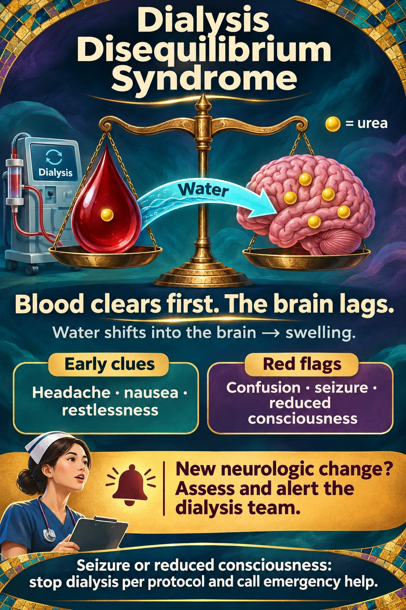

Dialysis disequilibrium syndrome
NUR 198 · Module 9 · Exam 4 | A new neurologic change during or shortly after hemodialysis needs prompt assessment.
Published infographic: NephMadness
Dialysis disequilibrium syndrome: how rapid solute removal can affect the brain. Look for the water shift and the neurologic clues.

Study Hub nursing memory visual

Blood clears first. The brain lags.
The gold beads are urea. If hemodialysis removes urea from blood faster than urea leaves the brain, water can shift into brain tissue and cause swelling. Risk is greatest with early treatments and a high starting BUN.
What the nurse sees
- Early: new headache, nausea, or restlessness.
- Worsening: confusion, a seizure, or a decreasing level of consciousness.
What to do first
Stay with the patient. Assess airway, breathing, vital signs, and neurologic status. Notify the dialysis team immediately. Check glucose and consider other urgent causes, including hypotension or stroke.
Seizure or declining consciousness: if dialysis is running, stop it per emergency protocol and activate the emergency response. Protect the patient during a seizure. If treatment has ended, the neurologic change still needs urgent assessment.
Prevention
For patients at risk, the dialysis team prescribes gentler initial treatments so blood urea falls more gradually.
Related Simple Nursing handout
This is the course handout on hemodialysis. No separate Simple Nursing handout devoted to DDS was identified.